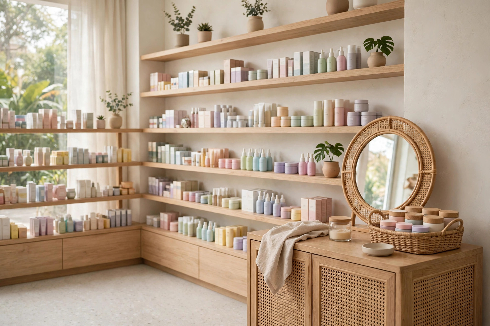

Website cho shop mỹ phẩm cần có gì: tra thành phần, chọn đúng loại da, đặt hàng nhanh không cần chờ báo giá
Khách cầm hai lọ serum, so sánh thành phần trước khi chọn — khoảnh khắc mua sắm quen thuộc của khách mua mỹ phẩm, và là lý do website shop mỹ phẩm phải cho tra thành phần và lọc đúng loại da ngay trên trang.
Chín giờ tối, khách nhắn vào fanpage shop bạn: "Chị ơi, serum này da dầu mụn dùng được không ạ, có cồn không ạ, giá bao nhiêu ạ?" Bạn đang dở tay đóng gói đơn buổi tối, trả lời sau nửa tiếng thì tin nhắn đã trôi xuống dưới, khách thì đã lướt sang shop khác — ở đó, khách tự tra được thành phần ngay dưới mỗi sản phẩm, tự lọc ra đúng món cho da dầu mụn, và đặt xong đơn trong lúc chờ bạn trả lời. Sáng hôm sau bạn mới nhắn lại: "Dạ dùng được ạ, shop còn hàng ạ" — nhưng khách không còn nhớ mình định mua gì nữa, đơn hàng thì chưa bao giờ được đặt.
Chủ shop mỹ phẩm nào cũng quen cảnh này — không phải vì khách không muốn mua, mà vì shop bắt một người đang phân vân về da của mình phải nhắn tin, chờ đợi rồi mới mua được. Ngay dưới đây, mình sẽ cùng bạn bóc tách vì sao cách làm hiện tại của phần lớn shop mỹ phẩm đang làm mất đơn, những mục một website cho shop mỹ phẩm thực sự cần có, và cách bạn tự kiểm tra trước khi bỏ tiền làm web.
Vì sao shop mỹ phẩm đông khách vẫn mất đơn: ba lỗi quen thuộc
Lỗi thứ nhất là thành phần không ghi rõ, khách không dám mua. Mỹ phẩm là thứ bôi trực tiếp lên da, mà da mỗi người mỗi khác: da dầu mụn sợ cồn và hương liệu, da nhạy cảm sợ chất tẩy mạnh, da khô cần dưỡng ẩm sâu. Vậy mà trên fanpage hay trang bán hàng của nhiều shop chỉ ghi tên sản phẩm và giá, thành phần thì không có, hoặc có thì ghi chung chung "chiết xuất thiên nhiên". Khách không biết serum này có cồn không, nồng độ hoạt chất chính là bao nhiêu, có hợp da dầu mụn của mình không — lại phải nhắn hỏi, mà nhắn hỏi thì phải chờ. Với mỹ phẩm, một câu hỏi về thành phần không được trả lời kịp là một đơn hàng mất luôn, vì khách không dám bôi thứ mình không rõ lên mặt.
Lỗi thứ hai là không lọc được theo loại da. Một shop mỹ phẩm có vài trăm sản phẩm: serum cho da dầu, kem dưỡng cho da khô, sữa rửa mặt cho da nhạy cảm — tất cả xếp chung một kệ, khách phải tự lướt từng món để tìm thứ hợp da mình. Khách da dầu mua nhầm kem dưỡng cho da khô thì bí da, nổi mụn; khách da nhạy cảm dùng nhầm sản phẩm có hương liệu thì kích ứng, quay lại đòi đổi trả. Khi web không cho khách chọn loại da trước rồi mới hiện sản phẩm phù hợp, shop vừa mất đơn của người không tìm được món mình cần, vừa mất tiền đổi trả vì khách mua nhầm loại da.
Lỗi thứ ba là đặt hàng phải nhắn tin chờ báo giá. Khách mua mỹ phẩm quyết định trong vài phút: tra thành phần xong, thấy hợp da mình, giá vừa túi, bấm mua là xong. Một quy trình đặt hàng bắt khách phải nhắn tin, chờ shop báo giá, xác nhận còn hàng, xác nhận ship rồi mới chuyển khoản là một quy trình được thiết kế cho người rảnh — mà khách mua serum, mua kem dưỡng thì không rảnh, họ mua trong lúc chờ xe, lúc giải lao, lúc vừa hết lọ serum cũ. Mỗi bước chờ đợi là một cơ hội để khách quên mất mình định mua gì, hoặc mua luôn ở chỗ khác chỉ vì chỗ đó cho đặt hàng ngay.
7 mục một website shop mỹ phẩm thực sự cần có
Một website cho shop mỹ phẩm không cần nhiều trang, càng không cần hiệu ứng cầu kỳ. Nó cần đúng những mục dưới đây — mỗi mục giải quyết một câu hỏi cụ thể mà khách luôn hỏi trước khi bấm đặt hàng.
1. Bảng thành phần tra được ngay dưới mỗi sản phẩm — khách biết mình đang bôi gì lên da
Đây là mục quan trọng nhất với shop mỹ phẩm, vì khách mua mỹ phẩm không mua theo tên sản phẩm mà mua theo thành phần: serum này có cồn không, có hương liệu không, nồng độ hoạt chất chính là bao nhiêu, có thành phần nào da nhạy cảm nên tránh không. Bảng thành phần phải nằm ngay dưới tên sản phẩm, khách không phải nhắn hỏi: ghi rõ thành phần chính theo đúng thông tin hãng công bố, ghi rõ "không cồn, không hương liệu" khi đúng là như vậy, và ghi thêm một dòng hướng dẫn dùng thử trên vùng da nhỏ trước khi dùng toàn mặt — dòng này vừa giúp khách an tâm, vừa giúp shop giảm hẳn khiếu nại vì kích ứng. Với sản phẩm có nhiều dung tích, ghi rõ giá theo từng dung tích ngay dưới bảng thành phần. Bảng này cũng là thứ giúp bạn giảm hẳn tin nhắn "serum này da dầu dùng được không chị" — vì khách tự tra được trong vài giây, lúc nửa đêm, không cần chờ bạn trả lời.
2. Bộ lọc theo loại da — chọn da trước, chỉ hiện sản phẩm hợp da đó
Khách vào web của bạn thường đã biết da mình thuộc loại nào, nên web phải cho họ chọn loại da trước rồi mới hiện sản phẩm: da dầu, da khô, da nhạy cảm, da hỗn hợp, da mụn — chọn xong, toàn bộ serum, kem dưỡng, sữa rửa mặt hiện ra đều là hàng phù hợp với loại da đó, không lẫn sản phẩm cho da khác. Một bộ lọc làm đúng sẽ loại bỏ gần như toàn bộ lỗi mua nhầm: khách không phải tự đối chiếu thành phần từng món, không phải nhắn hỏi "sản phẩm này hợp da em không", và bạn cũng không phải xử lý đổi trả vì khách mua nhầm loại da. Bộ lọc càng nằm gần đầu trang càng tốt, ngay dưới thanh tìm kiếm, để khách chạm hai lần là tới đúng kệ hàng cho da mình.
3. Ảnh thật và thông tin dùng thật — dung tích, hạn sử dụng, xuất xứ, cách bảo quản
Mỗi sản phẩm cần ảnh chụp thật của chính món đồ bạn bán: mặt trước, mặt sau, cận nhãn thành phần, cận chất kem hoặc chất serum bên trong. Kèm theo đó là thông tin ngắn gọn mà đủ ý: dung tích bao nhiêu ml, hạn sử dụng tới khi nào, xuất xứ ở đâu, bảo quản thế nào sau khi mở nắp, dùng được trong bao lâu sau khi mở. Với mỹ phẩm, khách đọc một lượt là hình dung được món đồ cầm trên tay sẽ như thế nào, và đó chính là thứ khiến họ bấm đặt hàng thay vì nhắn hỏi thêm. Ảnh thật kèm thông tin thật còn có một tác dụng khác: khi hàng giao tới tay giống hệt những gì web đã ghi, khách tin shop, và lần sau họ hết serum cũng quay lại chỗ bạn.
4. Giỏ hàng và đặt hàng COD — khách đặt xong trong 3 lần chạm
Khách mua mỹ phẩm thường mua trong những khoảng thời gian vụn vặt: lúc chờ xe, lúc giải lao, lúc vừa hết lọ serum cũ. Quy trình đặt hàng vì vậy phải ngắn nhất có thể: chọn đúng sản phẩm cho loại da mình, bấm "đặt hàng", điền tên, số điện thoại và địa chỉ là xong — ba lần chạm, không cần tạo tài khoản, không cần chuyển khoản trước. Khách nhận hàng mới trả tiền (COD) đúng thói quen mua bán quen thuộc, không phải lăn tăn chuyển khoản cho một shop lạ vì một lọ serum vài trăm nghìn. Form đặt hàng càng ít ô càng tốt: bỏ bớt những trường không cần thiết, để lại đúng những gì bạn cần để giao hàng. Một đơn mỹ phẩm được đặt xong trong lúc khách còn đang rảnh tay là một đơn hàng bạn đã giữ được.
5. Combo routine theo loại da — mua một lần là đủ bộ dùng ngay, khỏi chọn lẻ từng món
Khách mới bắt đầu chăm da thường không biết mình cần những gì: sữa rửa mặt nào, toner nào, serum nào, kem dưỡng nào — mà mua lẻ từng món thì dễ thiếu, dễ mua nhầm loại da. Mục combo giải quyết đúng nỗi lúng túng đó: routine cho da dầu gồm sữa rửa mặt kiềm dầu, toner cân bằng, serum và kem dưỡng mỏng nhẹ trong một gói; routine cho da khô gồm sữa rửa mặt dịu nhẹ, toner cấp ẩm, serum và kem dưỡng đặc trong một gói. Ghi rõ trong mỗi combo gồm những gì, dùng cho đúng loại da nào, thứ tự dùng ra sao, tổng giá bao nhiêu và tiết kiệm hơn mua lẻ bao nhiêu — khách nhìn một bảng là quyết định được ngay, không cần nhắn hỏi "da em thì cần mua những gì chị". Bạn cũng bán được nhiều món hơn trong một đơn, mà khách thì cầm bộ về là dùng được ngay, không phải chạy đi mua thêm.
6. Đổi trả ghi rõ ngay trang sản phẩm — hàng lỗi đổi trong mấy ngày, điều kiện ra sao
Mỹ phẩm là mặt hàng khách lo nhất về chuyện không hợp da sau khi mua, nên chính sách đổi trả phải nằm ngay dưới nút đặt hàng, không giấu trong một trang riêng khó tìm: hàng lỗi, hàng giao sai mẫu thì đổi mới trong bao nhiêu ngày; hàng đã bóc seal thì đổi theo điều kiện nào; khách dùng thử bị kích ứng thì liên hệ shop ra sao để được hướng dẫn. Ghi rõ điều kiện ngay từ đầu — hàng chưa bóc seal đổi theo điều kiện nào, hàng đã mở nắp thì sao — để khách không phải hỏi lại và bạn không phải giải thích lại từng người. Một chính sách đổi trả rõ ràng làm được điều mà ảnh đẹp không làm được: khiến khách dám bấm mua ngay cả khi họ chưa từng mua ở shop bạn bao giờ, vì họ biết nếu sản phẩm không hợp thì vẫn có đường quay lại.
7. Đánh giá của khách đã mua — ghi rõ loại da nào, dùng bao lâu, thấy sao
Với shop mỹ phẩm, đánh giá có giá trị nhất không phải là "shop uy tín lắm ạ" mà là những dòng ghi rõ thông tin thật: "da mình da dầu mụn, dùng serum này 3 tuần, da đỡ đổ dầu buổi trưa", "da khô dùng kem dưỡng này 2 tuần, sáng dậy da không còn bong tróc", "da nhạy cảm dùng sữa rửa mặt này 1 tháng, không bị rát như loại cũ". Mục này cần tên thật của khách, loại da của khách, thời gian đã dùng và cảm nhận cụ thể — kèm được ảnh thật sản phẩm khách đang dùng thì càng tốt, với sự đồng ý của khách. Năm đến bảy đánh giá như vậy, đặt ngay dưới bảng thành phần, có tác dụng hơn cả một trang giới thiệu dài: khách đang phân vân có hợp da mình không sẽ đối chiếu da của mình với da trong đánh giá và tự tin bấm mua, thay vì nhắn hỏi bạn rồi chờ trả lời.
👉 Xem thư viện mẫu web theo ngành nghề tại Web Khởi Nguồn
Kệ mỹ phẩm xếp theo từng loại da, nhãn trống để ghi tên sản phẩm — cách trưng bày này trên website giúp khách chọn đúng sản phẩm cho da mình ngay lần đầu.
Khách mua một món lẻ và khách mua cả routine dùng website của shop theo hai cách hoàn toàn khác nhau
Khách mua một món lẻ — người chỉ cần một lọ serum cho da dầu mụn — vào web của bạn với mục đích rất thực dụng: tra thành phần, thấy hợp da mình, thấy giá, đặt xong trong một phút rồi tắt đi. Với nhóm này, bảng thành phần tra được ngay, bộ lọc theo loại da, giá ghi rõ theo dung tích và giỏ hàng đặt nhanh là quan trọng nhất; họ không cần đọc dài, không cần tư vấn nhiều, và cũng là nhóm quay lại thường xuyên nhất — mỗi lần hết serum, hết kem dưỡng là một lần họ mở lại web của bạn.
Khách mua cả routine — người mới bắt đầu chăm da, hoặc người vừa đổi loại da sau tuổi 30 — lại vào web với tâm thế dò xét. Họ so sánh từng combo theo loại da, đọc kỹ thành phần từng món, soi chính sách đổi trả và đọc đánh giá của người cùng loại da trước khi quyết định. Với nhóm này, combo routine theo loại da, bảng thành phần đầy đủ, chính sách đổi trả rõ ràng và đánh giá ghi rõ loại da là bốn thứ quan trọng nhất; thiếu một trong bốn, họ sẽ sang shop khác. Hiểu hai hành vi này, bạn sẽ biết vì sao website shop mỹ phẩm phải vừa có đủ bảng thành phần, bộ lọc loại da, đổi trả rõ ràng cho khách mua routine, vừa có tra thành phần nhanh và đặt hàng nhanh cho khách mua lẻ — thiếu một phía là mất một nửa cơ hội.
Gói website trọn gói 586.000đ tại Web Khởi Nguồn gồm những gì cho shop mỹ phẩm?
Nghe giá 586.000đ, nhiều chủ shop nghi ngờ ngay: rẻ vậy thì web làm ra chắc chỉ để "cho có", được vài hôm lại lỗi. Nghi ngờ đó có cơ sở nếu giá rẻ đến từ việc cắt xén tính năng. Còn ở đây, giá thấp đến từ cách làm: shop nhỏ chỉ cần 1 đến 5 trang đúng nhu cầu, cấu trúc trang cho cửa hàng bán hàng đã được đóng gói thành quy trình chuẩn, đội ngũ không phải ngồi lập trình lại từ con số không cho từng khách, nên chi phí dồn vào đúng phần nội dung và giao diện riêng của shop bạn. Bạn có thể xem chi tiết tại bảng giá và mục gói 586.000đ gồm những gì trên trang chủ.
Cụ thể với một shop mỹ phẩm, gói bàn giao gồm: website 1–5 trang theo yêu cầu (trang giới thiệu shop, trang sản phẩm với bảng thành phần và bộ lọc theo loại da, trang combo routine theo loại da, trang liên hệ — bố cục theo đúng ngành mỹ phẩm và màu sắc thương hiệu của shop); chuẩn mobile tuyệt đối vì phần lớn khách xem bằng điện thoại; tên miền năm đầu, hosting và chứng chỉ bảo mật SSL đã gồm sẵn trong giá; giỏ hàng và đặt hàng COD để khách đặt xong trong vài lần chạm, nhận hàng mới trả tiền; form liên hệ và form đặt hàng thu thông tin khách; cụm nút gọi — Zalo — bản đồ nổi một chạm để khách hỏi nhanh "serum này còn hàng không" và tìm đường tới shop. Web dựng xong trong 1–3 ngày, kèm hướng dẫn sử dụng chi tiết từ A–Z để bạn tự thêm sản phẩm mới, tự sửa giá theo dung tích, đăng sản phẩm mới mỗi tuần mà không cần biết kỹ thuật, và bảo hành kỹ thuật trọn đời. Chính sách làm thử trước, hài lòng mới thanh toán, không cần đặt cọc — bạn xem trước bản dựng của chính shop mình rồi mới quyết định. Khi shop mở thêm chi nhánh hay cần bán hàng bài bản hơn, bạn có thể nâng cấp lên gói website cao cấp mà không phải làm lại từ đầu.
Cách tự kiểm tra một website shop mỹ phẩm trước khi quyết định làm
Dù bạn làm web ở đâu, hãy tự kiểm tra bằng trải nghiệm của chính khách hàng, với bốn bước đơn giản sau. Bước một: lấy điện thoại của bạn, bật 4G, đóng vai một khách da dầu mụn đang cần mua serum. Đếm số lần chạm từ lúc trang mở tới lúc bạn đặt xong đơn — nếu phải qua quá 4 đến 5 lần chạm, hoặc phải nhắn tin hỏi thành phần và hỏi còn hàng thì mới mua được, trang đó đang làm mất đơn mỗi ngày. Bước hai: thử tra thành phần — tìm một sản phẩm, xem bảng thành phần có ghi rõ cồn, hương liệu, nồng độ hoạt chất không, và bộ lọc theo loại da có chỉ hiện hàng hợp da bạn chọn không. Bước ba: thử tự thêm một sản phẩm mới và sửa giá một dung tích, xem thao tác mất bao lâu; nếu phải nhắn nhờ người khác làm hộ, về lâu dài giá trên web sẽ lại thành giá cũ, và bạn quay về đúng lỗi thứ nhất ở đầu bài. Bước bốn: bấm thử nút gọi và nút Zalo ngay trên trang, xem có ra đúng số của shop không; gửi thử một đơn hàng qua giỏ hàng COD, xem thông tin có tới tay bạn đầy đủ tên, số điện thoại, địa chỉ, sản phẩm và đúng loại da khách đã chọn không; mở lại trang bằng 4G vào đúng giờ cao điểm tối, mạng yếu, xem trang và ảnh sản phẩm có hiện nhanh không — khách của bạn cũng đang mở trang trong đúng điều kiện như vậy, thường là lúc họ vừa cần mua gấp một món mỹ phẩm.
Quay lại cảnh chín giờ tối ở đầu bài: bạn không thể làm khách ngừng phân vân về da của mình, nhưng bạn có thể khiến một người đang cần một lọ serum tra được thành phần, lọc đúng món cho da dầu mụn của mình và đặt xong đơn trong vài lần chạm, không cần chờ ai báo giá. Thành phần tra được theo đúng loại da, combo routine ghi rõ từng món, đơn hàng tự đặt được và nhận hàng mới trả tiền — lúc đó tin nhắn còn lại chỉ là "chị ơi serum hợp da em lắm, cho em đặt thêm lọ kem dưỡng nhé", đúng kiểu tin nhắn mà chủ shop mỹ phẩm nào cũng muốn nhận. Nếu bạn đang cân nhắc làm website cho shop của mình, cứ xem trước các mẫu theo ngành nghề, đối chiếu với bảy mục trong bài này, rồi quyết định cũng chưa muộn.
Muốn shop của bạn có website như vậy?
Xem trước các mẫu demo theo ngành nghề, ưng mẫu nào làm mẫu đó — trọn gói 586.000đ, xem mẫu trước khi quyết định.